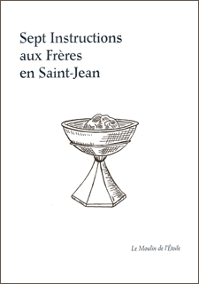
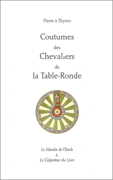
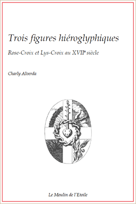
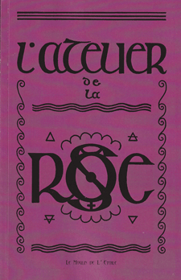
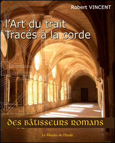
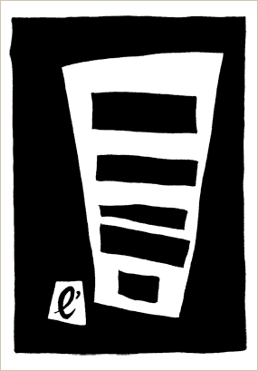

|
|
Le Moulin de l'Etoile
Ouvrages disponibles
|
Le Chrisme et ses variétés
|

|
Vincent Ambrosiani appartenait à la Commission des Fastes et Monuments eucharistiques de Paray-le-Monial qui dépendait alors de la Société du règne social du Christ par l’Eucharistie – plus communément nommée Hiéron du Val d’Or – menée par le père jésuite Victor Drevon et le baron Alexis de Sarachaga.
Ce texte – initialement édité en 1887 – où l’universalité du Chrisme est développée avec érudition, s’inscrit donc dans la mouvance de ce centre d’étude eucharistique porté par une société savante où œuvrait l’Archiprêtre, communauté alors porte étendard de la reconquête de la foi catholique en France. |
Format :
1 volume 12 x 18 cm
Broché, 142 pages
Tirage limité à 100 exemplaires
Prix : 21 €
|
|
| _____________________________________________________________________________________________________________________ |
Sept Instructions aux Frères en Saint-Jean
|

|
Curieux cheminement de la Révélation qui dans ces Instructions prend une forme chrétienne alors qu’on y sent des réflexions que n’auraient pas désavoué Guénon. Il est vrai que ce texte est proche de ce que nous savons de l’Estoile Internelle dont Charbonneau-Lassay fut l’un des derniers membres avant la dislocation momentanée de cette Société.
Les « Instructions » s’adressent à ceux de l’intérieur, c’est évident. Mais elles s’adressent aussi à certains catholiques pour leur signaler que l’orthodoxie la plus profonde peut s’enrichir des nouveaux moyens d’investigation et qui en étaient écartés. Elles s’adressent aussi tout aussi consciemment à tous les milieux hermétiques d’Occident… |
Format :
1 volume 14,8 x 21cm
Broché, 116 pages
Tirage limité à 100 exemplaires (seconde édition)
Réimpression prévue troisième trimestre 2025
|
|
| _____________________________________________________________________________________________________________________ |
Coutumes des chevaliers de la table ronde
|

|
Initialement édité en 1887 par l’imprimerie Garnier à Chartres, ce texte de Pierre à Thymo, chroniqueur belge du XVème siècle, retrace les lois qui étaient imposées aux chevaliers de la Table -Ronde.
Outre leurs coutumes, notamment en tournois, ce texte rare et abondamment commenté se termine par l’armorial détaillé des chevaliers de la légende. |
Format :
1 volume 13 x 20,5 cm
Broché, 73 pages
Tirage limité
à 100 exemplaires
Prix : 14 €
|
|
| __________________________________________________________________________________________________________________ |
Trois figures hiéroglyphiques
|

|
Il
est de ces travaux méconnus que l'on se plairait
à découvrir plus souvent, de ces ouvrages
de « compagnon » que l'on rêve
d'exhumer du fond d'une malle. Force est de reconnaître
que le travail de Charly Alverda est de ceux-là. Hormis l'oeuvre de
Jean Carteret, parmi la somme de livres publiés
ces deux derniers siècles au sujet du message
véhiculé par les tarots, rares sont
les recherches offrant autre chose au lecteur que
supputations infondées ou délires
occultistes. Si la présente étude
fait exception à la règle, c'est essentiellement
en raison des objectifs originellement envisagés
par son auteur. Nullement écrits dans un
but d'édition, les concepts contenus dans
ce texte étaient avant tout destinés,
selon toute vraisemblance, à constituer la
trame de travaux voués à demeurer
privés. Ces derniers étaient composés
d'une mise en perspective de l'iconographie du jeu
de cartes aux dragons des chevaliers de Malte (connu
par les historiens sous le nom d'Infirrera ) et
de textes issus d'anciennes confréries à
consonance initiatique.
Aucune interprétation,
aucun commentaire ne venant compléter ce
curieux document, nous demandâmes expressément
à l'auteur d'expliciter les textes faisant
face aux œ uvres du maître cartier. Si notre
requête de publier ce premier ouvrage ne fut
acceptée, Charly Alverda consentit cependant
à nous offrir le présent opuscule,
transposant ainsi l'étude symbolique de la
rose et de la croix du tarot maltais vers le chef-d'oeuvre
du Maître cartier Jacques Vieville, daté
au plus tard de 1664. Ce jeu de cartes peut être
considéré à plus d'un titre
comme le fameux Livre T des Rose-Croix tant son
iconographie semble manifester, sur chaque lame,
la sympathie du compagnon à l'égard
de cette fraternité. Par ailleurs, nous y
retrouvons conjointement, et de manière sous-jacente,
les symboliques des opérations sur l' œuvre
et du Compagnonnage. L'ensemble de ces éléments
constitua, à cette époque, le creuset
d'où émaneront les amalgames chers
à la Franc-Maçonnerie et aux diverses
sociétés secrètes.
Du multiple, retourner
à l'unité. Tel pourrait être
résumé le souhait, oserions-nous
dire la quête de notre auteur. Elaborant
le concept de Lys-Croix et présentant l'émergence
de ses Adeptes à l'aube du XVII e siècle,
Charly Alverda nous transmet essentiellement le
message de la tradition sacrée du compagnonnage
et de l'hermétisme chrétien. S'offre ainsi à
nous un droit de passage vers le mystère
des compagnons cartiers, de la Rose-Croix et de
l'alchimie dans ce qu'elle a de plus noble :
la transmission d'une voie de transmutation de
l'Etre au travers du plus fabuleux livre d'images
qu'ait porté l'Occident. |
Format :
1 volume 14 x 21 cm
Broché, 112 pages
Tirage limité
à 500 exemplaires
Prix : 23 €
|
|
| __________________________________________________________________________________________________________________ |
|

|
Transmettre. S’il était un mot résumant à lui seul les préoccupations des membres de L’Atelier de la Rose, c’est bien celui-ci. Car l’histoire de L’Académie du Minotaure – dont les travaux furent salués par René Guénon dans ses comptes rendus de lecture – reflète avant tout l’insatiable quête d’une authentique transmission provenant de témoins d’une lignée. Durant presque dix ans, les 33 cahiers de cette revue aujourd’hui devenus fort rares n’ont eu d’autre prétention que de faire état de l’avancement de leurs travaux et d’offrir, aux générations qui leur succéderaient, le fruit de leurs réflexions et de leur labeur. Afin de permettre au lecteur d’appréhender au mieux l’esprit et la lettre de ce formidable creuset que fut le Minotaure, une sélection des articles les plus significatifs de L’Atelier de la Rose lui est ici proposée. Les nombreux textes d’Albert Gleizes, René-Maria Burlet, Robert Pouyaud, Nicolas Boon, ou encore R.-A. Schwaller de Lubicz contenus dans cet ouvrage s’avèrent en effet d’une rare qualité.
Nous attirons l’attention de nos lecteurs sur l’introduction de M. Henri Giriat, dernier témoin de cette époque, qui passionnera à plus d’un titre tous ceux qui souhaiteront approfondir leurs connaissance des confréries ésotériques, et notamment de L’Estoile Internelle dont les membres furent en relation étroite avec ceux de L’Académie du Minotaure.
Les trois reproductions en couleurs de leurs travaux d’atelier achèvent de nous replonger dans leur fascinant univers…
Textes de Nicolas Boon, René-Maria Burlet, le moine Catoblépas, Jean Chevalier, Marcel Cluzel, Anne Dangar, Marie A. Deveraux, Didron, Henri Elie, Gaston Georgel, Matila C. Ghyka, Henri Giriat, Albert Gleizes, Henri de Montrond, Joseph Olivier, Robert Pouyaud, R.-A. Schwaller de Lubicz, E. von Steinbach, Dom Angelico Surchamp, J.M. Tezé.
|
Format :
1 volume 15 x 23 cm
Broché, 268 pages
Quelques exemplaires disponibles
Prix : 32 €
|
|
| __________________________________________________________________________________________________________________ |
L'Art du trait - tracés à la corde des bâtisseurs romans
|

|
Après un premier ouvrage intitulé " La géométrie du nombre d’or "qui a connu un franc succès, Robert Vincent, en professionnel
du batiment et virtuose des constructions géométriques, reprend la plume et explique avec règle et compas
(ou cordeaux et cannes à mesure), comment les moines batisseurs
du Moyen-Âge ont procédé pour édifier leurs monastères,
imposants ouvrages aux lignes très pures ou tout est spiritualité,
symbole, harmonie, mesure à la mesure de l’homme et beauté.
Robert Vincent détaille dans ce livre comment, à partir d’une simple corde à nœuds et d’une canne à mesurer,
nos anciens batisseurs ont construit des ouvrages qui font encore
notre émerveillement, contrairement à certaines églises
construites à la fin du XXe siècle. Il nous rappelle que ces techniques de construction dont la Beauté
constitue l'unique but à atteindre étaient déjà précisées dans la Bible
et s’appuyaient sur les travaux des géomètres grecs où prédomine
la divine proportion, autrement dit le nombre d’or.
Monsieur Robert Vincent, ingénieur diplomé de l’école spéciale des Travaux Publics de Paris et expert judiciaire honoraire, a dirigé
durant tente années un bureau d’étude en béton précontrain marseillais.
Auteur lui même d’ouvrages d’art, ponts, tunnels, il aurait sans
doute aimé étre maître d’œuvre dans la construction d’une église. C’est pouquoi il s’est toujours passionné dans la recherche du
secret des batisseurs des cathédrales.
L’auteur entreprend de nous montrer comment, à partir d’une
simple corde à nœuds et sans la puissance des ordinateurs,
ces anciens batisseurs ont construit ces ouvrages imposants.
|
Format :
1 volume 21 x 26 cm
Broché, 94 pages
Tirage limité à 50 exemplaires
Réimpression prévue fin 2025
|
|
| _____________________________________________________________________________________________________________________ |
Passage de l'Ombre / 1952-1953
|

|
Ecrit en 1952
par Frédérick TRISTAN (qui nous a quittés le 2 mars 2022) et illustré en 1954, Passage de l'Ombre
fut l'objet de réguliers remaniements graphiques
jusqu'au décès de Joël PICTON
(1926 - 1993) puis sombra dans l'oubli.
Devenu le « livre inconnu », cet ouvrage
inédit à l'exceptionnelle originalité
de la collection Recherches Graphiques paraît aujourd'hui en tirage très limité,
52 ans après sa conception.
Un volume de 112
pages, format 16,5 x 22,5,
dont 26 exemplaires sur Vélin pur fil Johannot lettrés de A à
Z et 250 exemplaires sur Vergé de Rives numérotés de 1 à
250.
Il a été tiré en outre 12
exemplaires H.C. réservés à
l'auteur et à l'éditeur.
Prix : 29 € pour les quelques exemplaires disponibles
|
|
|
| _____________________________________________________________________________________________________________________ |
|
|
|
|
| |
|
|